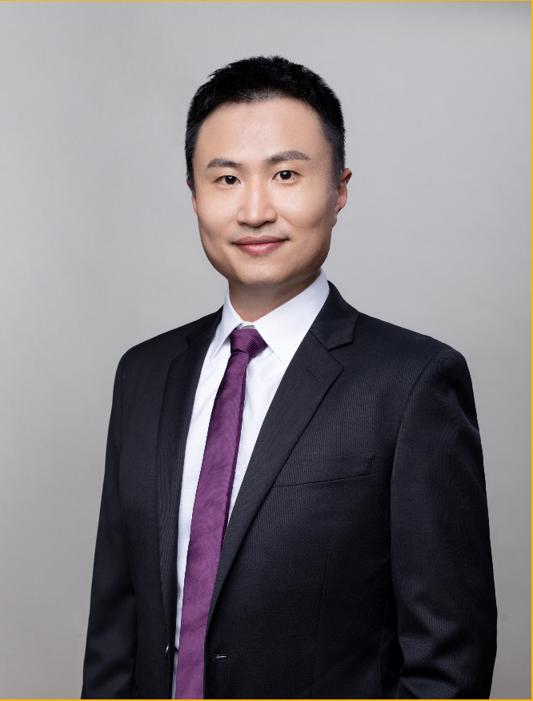

Principal Investigator
Wang, Yongfei
Presidential Young Fellow, Assistant Professor
Email: yfwang@cuhk.edu.cn
Education:
Ph.D. in Bioinformatics & Genetics (The University of Hong Kong)
B.Sc./M.Sc in Bioinformatics (Fujian Agriculture and Forestry University)
Research Interests:
Bioinformatics & Population Genetics, Autoimmune Diseases, Systemic Lupus Erythematosus, Omics Data Analysis, Drug Discovery & Repositioning, Genetic Screening
Biography:
Dr. WANG started to learn Bioinformatics since 2005 and obtained Bachelor’s and Master’s degrees at Fujian Agriculture and Forestry University. He continued his study at the University of Hong Kong and received the Ph.D. in Bioinformatics and Genetics in 2016. He focuses on the study of large-scale Omics data, especially in the field of autoimmune diseases. He has participated in many international and nation-wide collaborations and these works identified more than 130 genetic loci associated with systemic lupus erythematosus (SLE) during postdoctoral training. Together with functional genomic data from public domains, his works revealed cell type-specific regulation for the disease-associated genes. These findings significantly improved the understanding of disease pathogenesis. So far, he has published 46 papers at peer-reviewed journals, including Nature Genetics, Nature Communications, Annals of the Rheumatic Diseases and Arthritis & Rheumatology et al. Dr. Wang joined the School of Medicine at the Chinese University of Hong Kong (Shenzhen) as assistant professor in 2022. Dr. Wang’s future works would focus on how to translate real-world big data into clinical applications, with the aims of facilitating drug discovery and improving accuracy of genetic screening for both mendelian and complex diseases.
Awards and Grants:
Dr. Wang has led one National Natural Science Foundation of China (NSFC) Youth Project (completed), and participated in a National Key R&D Program of China (Precision Medicine, completed). He received the Beijing Medical Science and Technology Award (Second Prize, 2021) and the Outstanding Research Achievement Award from the Li Ka Shing Faculty of Medicine, The University of Hong Kong (2017).
Ongoing Grants:
Currently, Dr. Wang is the principal investigator of several ongoing research projects, including:
- National Natural Science Foundation of China (NSFC) General Program
- Shenzhen-Hong Kong-Macao Science and Technology Innovation Program (Category A)
- Two CUHK & CUHK-Shenzhen 1+1+1 Collaborative Research Programs